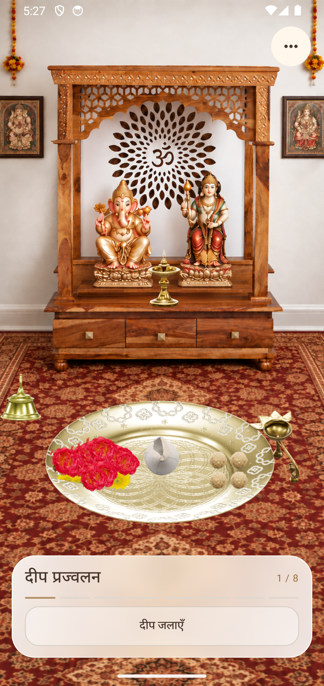

"शुभं करोति कल्याणम् आरोग्यम् धनसंपदा ।
शत्रुबुद्धि विनाशाय दीपज्योति नमोऽस्तु ते ॥"
Your Authentic
Home Sanctum
(नित्य घरेलू मंदिर)
Step into a mindful digital sanctuary for your daily prayers. Experience tactile brass bell resonance, deep 432 Hz shankh naad, warm flickering diya light, and authentic 8-step Vedic rituals on your mobile device.

Authentic 8-Step Daily Ritual
Traditional worship is mindful and reverent. Follow the authentic Vedic sequence from morning preparation to complete Aarti surrender.
Samagri Sangrah
सामग्री एकत्रीकरण
Assemble holy Gangajal, fresh marigolds, roses, sandalwood paste, kumkum, and fresh prasad onto your brass Pooja Thali.
Deepa Prajwalan
दीप प्रज्वलन एवं धूप
Dispel darkness with the warm flame of the brass diya while fragrant incense smoke curls gently around the altar.
Dev Snan & Abhishek
देव स्नान एवं मार्जन
Pour sacred holy water streams gently over Shri Ganesh Ji and Maa Lakshmi Ji, drying them gently with yellow silk.
Tilak & Pushparpan
तिलक एवं पुष्पांजलि
Apply sacred chandan and kumkum tilak to the divine foreheads and offer fresh lotus and marigold flowers at their feet.
Ghanti & Aarti
घंटी वादन एवं आरती
Ring temple brass bells with realistic acoustic resonance while circumambulating the flaming Aarti Thali clockwise.
Shankh Naad
शंख नाद (432 Hz)
Purify the atmosphere with a deep, resonant 432 Hz acoustic shankh call accompanied by continuous vibrational feedback.
Bhog Samarpan
भोग एवं प्रसाद समर्पण
Offer Modaks, Kheer, and fresh fruits with sacred Achaman rituals before partaking in blessed prasad.
Aarti Stuti & Lyrics
आरती गायन एवं स्तुति
Immerse in synchronized bilingual karaoke lyrics for Jai Ganesh Deva and Om Jai Lakshmi Mata with background playback support.
Realistic Temple Aging & Morning Cleaning
Just like a real home altar, flowers naturally fade into nirmalya and soft dust settles on the marble altar if unmaintained. Experience authentic spiritual discipline.
Sacred Audio & Real-Time Karaoke
Sing along with synchronized Devanagari lyrics and English transliterations. Enjoy offline continuous playback, background audio, and accompanying bell chimes.
- ✓ Traditional Aartis: Jai Ganesh Deva & Om Jai Lakshmi Mata
- ✓ Synchronized line-by-line Devnagari scrolling
- ✓ Ambient Om Chanting (432 Hz) background resonance
- ✓ Respectful privacy & 100% offline playback capable
Bring Pavitra Mandir to Your Daily Life
Start your morning with spiritual purity and devotion. Download the native mobile application for Android & iOS.